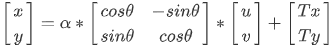
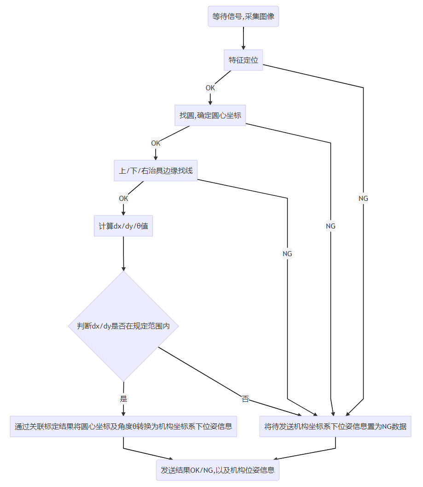
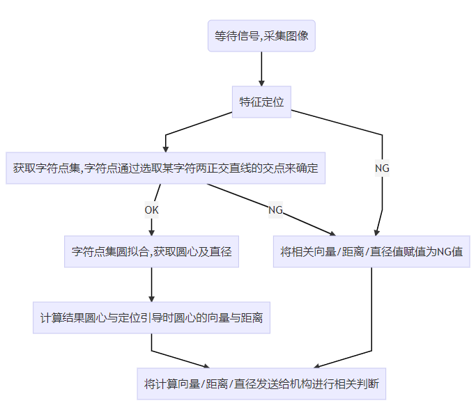
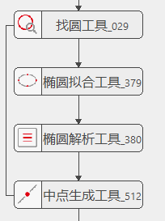
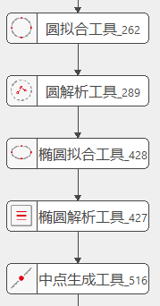

Dự án này chủ yếu sử dụng định vị thị giác để dẫn hướng laser khắc ký tự vào vị trí tương ứng trên phôi.
Dự án được chia thành ba phần chính: hiệu chuẩn camera và hiệu chuẩn liên kết, định vị dẫn hướng, và kiểm tra lại kết quả. Nội dung từng phần như sau:
Mục đích hiệu chuẩn camera là xác định tỷ lệ chuyển đổi pixel, tham số méo hình… để có thể chuyển đổi tọa độ pixel sang tọa độ vật lý.
Do hệ tọa độ gương quét laser là hệ tọa độ 2D, giống với hệ tọa độ camera, nên hiệu chuẩn liên kết thực chất là xác định ma trận chuyển đổi từ hệ tọa độ ảnh 2D của camera (màu xanh lá trong hình dưới) sang hệ tọa độ mặt phẳng khắc 2D (màu đen trong hình dưới).
Quan hệ biến đổi giữa các hệ tọa độ như sau:

Trong đó (x,y) là tọa độ trong hệ tọa độ gương quét laser, (u,v) là tọa độ trong hệ tọa độ camera, α là tỷ lệ phóng đại giữa hai hệ tọa độ, θ là góc xoay giữa hai hệ, (Tx,Ty) là khoảng cách giữa gốc tọa độ của hai hệ. Hiệu chuẩn tức là xác định giá trị của α, θ và (Tx,Ty).
Định vị dẫn hướng tức là sử dụng xử lý hình ảnh để lấy tọa độ vị trí và góc của mục tiêu trong ảnh, sau đó dựa trên kết quả hiệu chuẩn liên kết để chuyển đổi sang tọa độ cơ khí, giúp thực hiện chuyển động tương ứng.
Hình dưới minh họa vị trí phôi chờ khắc laser trên đồ gá, vùng trắng xung quanh vòng tròn (màu xanh lá) là khu vực ký tự. Khi khắc chỉ cần cung cấp cho gương quét laser vị trí tâm phôi và vị trí bắt đầu khắc, thông tin ảnh cần thiết là tọa độ tâm phôi (màu xanh dương) và góc vị trí phôi trên đồ gá θ (trong dự án này là giá trị trung bình của góc đường thẳng ở mép trên và mép dưới của đồ gá). Đồng thời cần kiểm tra vị trí phôi trên đồ gá có hợp lệ hay không, tức là giá trị dx và dy phải nằm trong một khoảng cho phép; nếu vượt quá giới hạn thì coi như gá đặt lỗi, khi đó xuất tín hiệu NG để máy gá lại hoặc loại bỏ phôi.

Dựa trên phân tích trên, quy trình định vị dẫn hướng như sau:

Mục đích của kiểm tra lại kết quả là xác định vị trí ký tự khắc laser có hợp lệ hay không. Vì ký tự khắc thực tế được phân bố theo chu vi hình tròn (như hình dưới), nên việc kiểm tra lại có thể lượng hóa dựa trên vị trí và kích thước của đường tròn đó.

Theo phân tích định lượng, quy trình kiểm tra lại như sau:

Sử dụng công cụ “Hiệu chuẩn camera mục tiêu”.
Sử dụng “phương pháp hiệu chuẩn 9 vòng tròn” để hiệu chuẩn liên kết, các bước như sau:
(1) Sử dụng gương quét laser khắc một ma trận vòng tròn 3 × 3 theo kiểu mảng tuyến tính trên tấm hiệu chuẩn (như vùng đỏ trong hình dưới) và ghi lại tọa độ tâm từng vòng tròn trong hệ tọa độ gương quét laser;
(2) Đặt tấm hiệu chuẩn vào vị trí đồ gá của phôi cần gia công, dùng camera chụp ảnh và nhập ảnh vào công cụ “Hiệu chuẩn liên kết 9 vòng tròn”;
(3) Nhập tọa độ tâm các vòng tròn trong hệ tọa độ gương quét laser vào vùng màu xanh lá trong hình dưới;
(4) Các tham số khác thiết lập theo tình hình thực tế;

(5) Đặc biệt chú ý đến hai tham số “Hướng trục X” và “Hướng trục Y” của công cụ “Hiệu chuẩn liên kết 9 vòng tròn”: theo định nghĩa của công cụ, hướng dương trong hệ tọa độ ảo thống nhất là sang phải và xuống dưới; giá trị 0 nghĩa là hướng dương, 1 nghĩa là hướng ngược lại;

Dựa trên quy trình kiểm tra trong “2.2 Phân tích phương án định vị dẫn hướng” và tình hình thực tế, triển khai thị giác như sau:




Dựa trên quy trình trong “2.3 Phân tích phương án kiểm tra lại” và tình hình thực tế:


